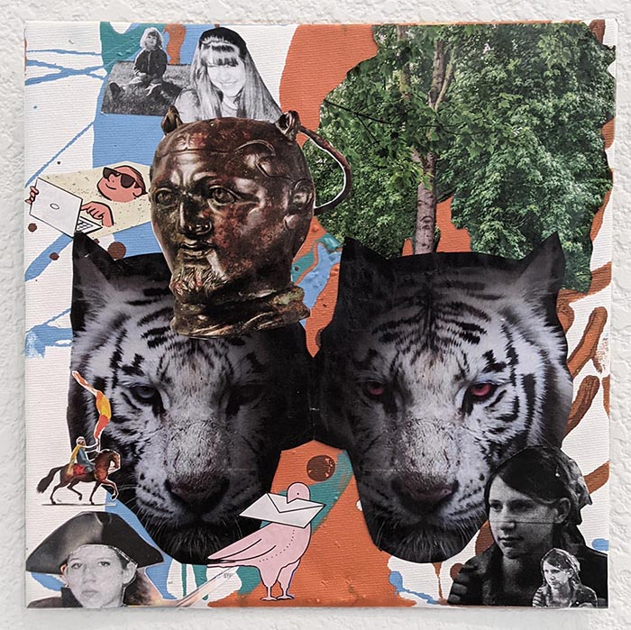
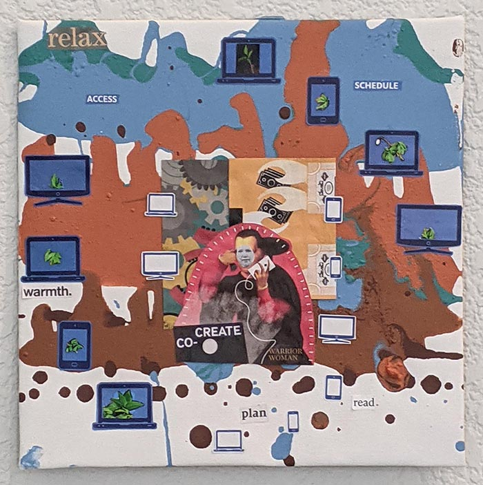

Mixed media on Canvas 9" x 9"
With visions of a priestess who is drawing down wisdom from above, motherly wisdom is passed down in this piece.
Hero's Journey Part 2. The Fool
Mixed media on Canvas 9" x 9"
A playful young child (a muppet) rides in the back of a car driven by a stern ancient stone statue.
Hero's Journey Part 3. Death & The Moon
Mixed media on Canvas 9" x 9"
Emily Schleiner's encounter with death is represented by a sprout growing from the top of her head while the moon reveales ancient patterns in a salt water pool.
Hero's Journey Part 4. The Tower
Mixed media on Canvas 9" x 9"
The Tower rips away solid sense of foundation in this depiction of a chaotic moment in Emily Schleiner's life.

Hero's Journey Part 5. The Devil
Mixed media on Canvas 9" x 9"
Emily Schleiner interprets the Devil as a scapegoat, the part of ourselves that behaves compulsively.
Hero's Journey Part 6. The Hierophant
Mixed media on Canvas 9" x 9"
Emily Schleiner explores her feelings of being excluded by and later working in institutions.
Hero's Journey Part 7. Justice
Mixed media on Canvas 9" x 9"
Emily Schleiner's hopeful volunteer efforts come from her desire to right the wrongs of the world.
Hero's Journey Part 8. Strength
Mixed media on Canvas 9" x 9"
Emily Schleiner's learning challenges have shaped her, leading to the development of courage and persistance in some situations.

Hero's Journey Part 9. The Magician
Mixed media on Canvas 9" x 9"
A sense of 'becoming an expert in web development' is conveyed in this piece.
Hero's Journey Part 10. The Empress
Mixed media on Canvas 9" x 9"
A fertile gush of abundance, sensuousness, care, and restoration convey a marked perspective shift.
Archived Art Work
Emily Schleiners artwork spans multiple decades and has evolved from conceptual art.